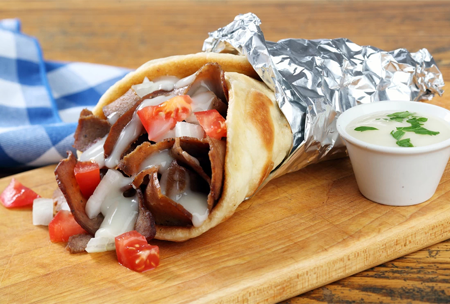

Donair
Servings: 6
Calories: 450
Prep Time: 9 hrs 50 mins

Ingredients
- 1 pound ground beef
- 1 teaspoon ground black pepper
- 1 teaspoon onion powder
- 1 teaspoon garlic powder
- 1 teaspoon salt
- 1 teaspoon paprika
- 2 teaspoons cayenne pepper
- 1 teaspoon dried oregano
- 1 can evaporated milk
- 1/2 cup white sugar
- 1/4 cup of white vinegar, or to taste
- 6 large pita bread rounds
Instructions
- In a bowl, thoroughly mix together the ground beef, black pepper, onion powder, garlic powder, salt, paprika, cayenne pepper, and oregano. Pack the spiced meat into a thick loaf shape, cover, and let rest in the refrigerator overnight.
- Preheat oven to 350 degrees F (175 degrees C).
- Place the meat loaf onto a baking sheet, and bake for 1 hour, flipping the loaf over halfway through cooking. Allow the meat loaf to cool so it holds together for slicing.
- Mix together the evaporated milk and white sugar in a bowl, stirring until the sugar is dissolved, and then add the vinegar by teaspoons, mixing together after each addition, to taste. Refrigerate the sauce until serving.
- Slice the meat loaf into 1/4-inch thick slices, and brown the slices in a skillet over medium heat until both sides are brown and crisp, about 5 minutes per side.
- Sprinkle the pita bread rounds with a little water, and press each onto a heated skillet to warm up.
- To serve, place several slices of meat into a warmed pita bread, and spoon about 2 tablespoons of sauce over the meat. Roll the pita bread into a cone shape, wrap in aluminum foil to keep the sauce from dripping out, and serve.